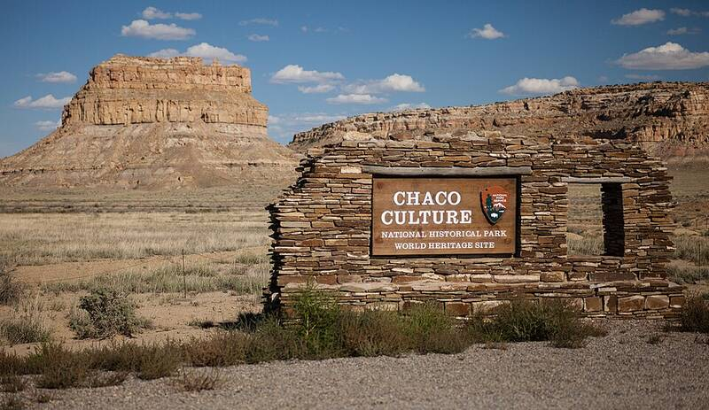

Chaco Canyon
New Mexico, about AD 850 to 1150

The center of Ancestral Puebloan culture, with multistory great houses like Pueblo Bonito and long straight roads. Several buildings align with solar and lunar cycles, and the "Sun Dagger" petroglyph on Fajada Butte marks solstices and equinoxes with daggers of light. A UNESCO World Heritage Site. 1
Open in the interactive Watcher
Sources
- Chaco Culture National Historical Park Wikipedia